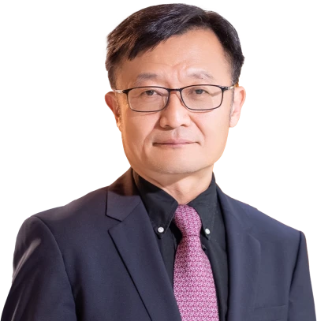

Lei Chen 陈雷
Chair Professor · Data Science & Databases
Dean of Information Hub, HKUST(GZ)
ACM Fellow · IEEE Fellow · Changjiang Scholar
Ph.D. in Computer Science, University of Waterloo, 2005
About
Research in data management and database systems, spanning data-driven AI, knowledge graphs, crowdsourcing and spatiotemporal data.